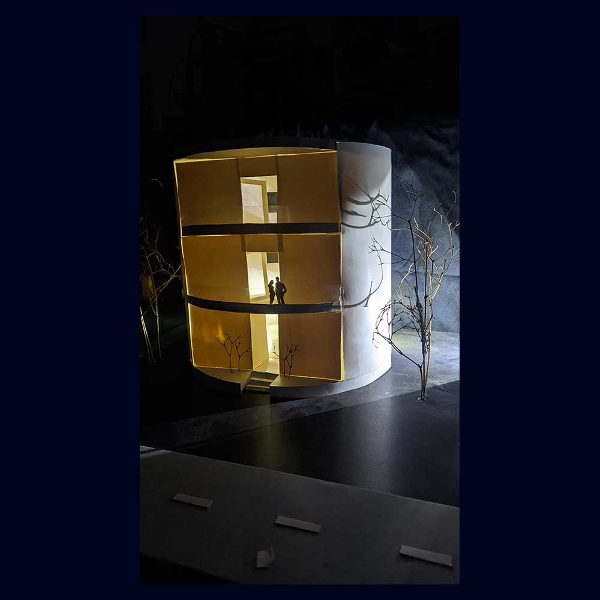

Portfolio
A handpicked collection of projects I've completed throughout the 3 years of my architectural studies at North South University.

Project 1
An interesting composition of dot art. I have captured some branches of the tree. And, then converted the image to a grayscale. I have added shade and shadow to the sketch through dots without using any kind of line or stroke.
Project 2
A composition consisting of shashlik and toothpick. Each small cell measures 3 square millimeters. Each cell is made up of vertex either above or below. The model has an elevation drawing.
Project 3
To explore the possibilities of generating a new form, a primary solid is chosen: a cube, sphere, cone, cylinder, or pyramid. The form is constructed and manipulated using the 3 types of transformation processes: addition, subtraction, and dimensional transformation.Project 4
The playfulness of light and shadow define our spatial experience and stimulate our emotion associated with space. Bringing light into space as a design element not only acts as the space´s lighting but also designs its atmosphere.
